This is an article about reverse engineering a part of the prominent "Mac Defender" malware - namely the part that downloads the main malware onto a user's Mac. As mentioned in the title this text is mainly written for people who have no experience with reverse engineering. Thus you will only need very basic understanding of x86 assembly, x86 calling conventions and a little Objective-C (reading the wikipedia article should be enough).
We will try to find out how the downloader retrieves the URL where the main malware program is hosted. We will only use static analysis to achieve this goal so you won't need a Macintosh computer. Statical analysis means that we won't execute any malware code - we will try to decipher its secrets just by looking at the disassembly.
Please note that I am not a professional reverse engineer/malware analyst. I do this whenever I am bored. So some info in this article might lead to extreme facepalming among professionals. Also you don't want to follow this article on a mission critical computer. We won't execute any malware code but you never know. You could accidentally launch the app or someone using your computer might get curious and start it.
Check out my Audio Recorder for OS X. It's a tool I've written in my spare time and maybe it's useful to you as there are no real good Mac audio recorders. Ok, now let's continue ...
First you will need a copy of IDA Pro. No worry, you don't need to buy it. We will be using the free demo version of IDA Pro 6.1. Which you can download from here.
Then you will need a copy of the evil malware we want to reverse engineer. You can get it from here:
http://jsz.github.com/bin/avRunner.app.zipDownload and extract the archive but DO NOT RUN THE APP!
If you somehow execute the avRunner app you don't need to be scared. The Mac Defender malware is pretty lame and getting rid of it is easy:
$ kill -9 [mac defender pid]Also the newest OS X update will remove the malware.
Now it's time to get started with malware analysis. As mentioned earlier our aim is to find out how the downloader gets/generates/receives/finds the download URL of the main malware.
So let's start IDA and load the "avRunner" binary. Either drop the file onto IDA's "drop here" field or go the File->Load File way. Select the i386 binary (the demo can't disassemble 64bit code), click 'Ok' in the dialog and wait a little for the analysis to complete.
After the analysis completes you will be shown the disassembly for the main() function:
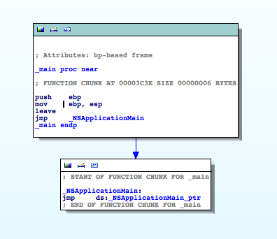
There's not much to be seen here because the application is a Objective-C Cocoa app. All main() does is to call NSApplicationMain() which is a function deep in Apple's libraries. As no user code is executed there we need to find a good entry point in the malware to start our analysis.
One of the classic entry points in Cocoa apps is the -applicationDidFinishLaunching: method of the application's controller/delegate. So maybe there's something interesting. Scroll through the functions window and double click on __InstallerAppDelegate_applicationDidFinishLaunching__.
You will get this disassembly:
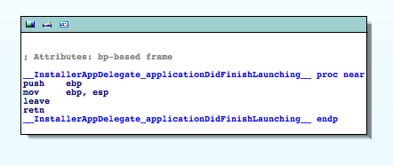
Hmm, not much happening here either. So back to the functions window ...
Let's scroll through the functions list to find something that looks like a good entry point. If we don't find anything we'll have to fire up the debugger and follow the execution path. Which can be tedious. So we better find a candidate now :)
Ah, there. __DownloadWindCtrl_startDownloadingURL__ looks pretty promising. Thank his Steveness for the extreme verbosity of Obj-C. A double click and bingo. Much is going on here:
Without reading any disassembly we can see that there's a suspicious format string which looks like a URL without the host part. I bet this is the place we've been looking for. So we zoom & enhance onto that section and take a deeper look.
lea eax, (cfstr_Http@MacSoft_p.isa - 2E3Fh)[ebx] ; "http://%@/mac/soft.php?affid=%@" mov [esp+8], eax mov eax, ds:(off_543C - 2E3Fh)[ebx] mov [esp+4], eax mov eax, ds:(off_5458 - 2E3Fh)[ebx] mov [esp], eax call _objc_msgSendThe first instruction loads the address of the format string into the eax register. The next instruction
mov [esp+8], eax moves the address onto the stack. In combination with a call to _objc_msgSend a few lines later we can conclude that this format string is passed to a objective-c method.
If we only knew which Obj-C method will be called. This is something tedious to find out by looking at disassembly. You have to inspect the first and 2nd argument to _objc_msgSend to get an idea which method is invoked on which object. I'll describe later how that works in detail. For now let's just do what we and Dr. House can do best: guessing.
Usually format strings are passed to functions that take the string as the 1st or 2nd argument and each following argument is "put into the place" of the corresponding format specifier in the format string. There are complex format strings with random argument access but they are not the norm and luckily we can see that our format string is pretty simple. It only takes 2 arguments.
A line above the lea eax, ... instruction we see that the contents of the esi register are placed onto the stack right next to our format string:
mov [esp+10h], eax mov [esp+0Ch], esi lea eax, (cfstr_Http@MacSoft_p.isa - 2E3Fh)[ebx] ; "http://%@/mac/soft.php?affid=%@"
This must be the first argument to the format string and thus our hostname. Let's trace where esi gets its value:
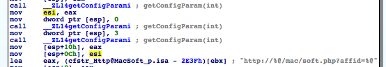
A click on esi in the disassembly is helpful to see where the esi register is manipulated. We can see that some lines above the contents of the eax register are moved into esi. And a line above that we see a call to __ZL14getConfigParami. (That's how mangled c++ functions look like.) So the hostname must be somehow generated in the getConfigParam() function. (Return values are placed into the EAX register.)
At this point we could set a breakpoint on the getConfigParam() call, run the debugger and read out the eax contents and have our host name. But what if there's more to the hostname generation? What if the hostname is somehow procedurally generated? Maybe it is retrieved from the internet? To find this out we have to dig deeper into getConfigParam() ...
So go to the functions window and find the getConfigParam() function and double click it. IDA will open the function's disassembly which is rather long:
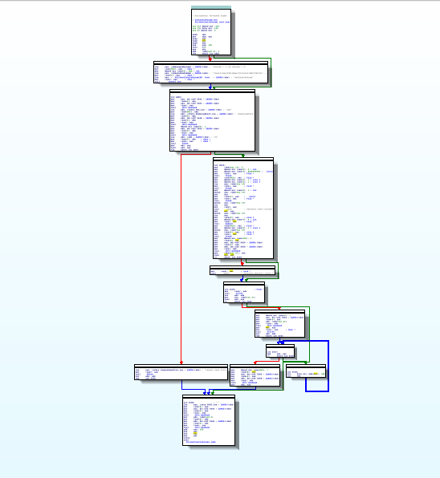
Let's zoom in and take a deeper look ...
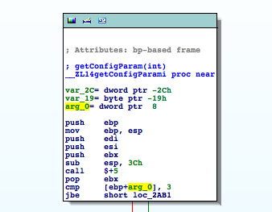
We see that the function takes one integer argument and that there's some branching done depending on the parameter. We should find out which value is passed to getConfigParam() when the hostname is retrieved. So back to the previous __DownloadWindCtrl_startDownloadingURL__ function. (Just press ESC.)
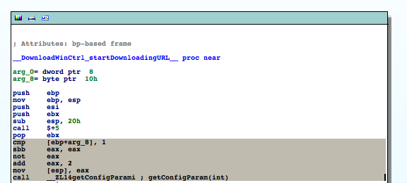
A few lines above the first call to getConfigParam() we can see that there's some fiddling with the parameter passed to __DownloadWindCtrl_startDownloadingURL__. The value we pass to getConfigParam() depends on arg_8's value. The marked instructions from the upper screen shot are equivalent to the following pseudo code:
if (arg_8 == 0) eax = 2 else eax = 1 hostname = getConfigParam(eax)
Now that we know which values the parameter can have we can go back to getConfigParam ...
As we see the code compares arg_0 (which is a name automatically generated by IDA for the first argument passed to this function) to 3 and jumps to loc_2AB1 if it is below or equal 3. Which for our case (either 1 or 2) always is true. So we can continue at loc_2AB1:
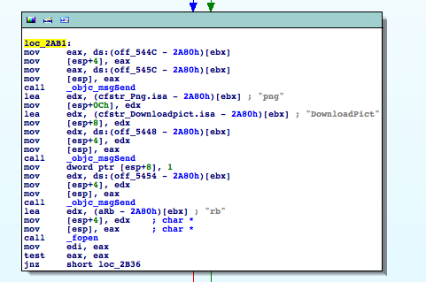
We can see that there are a few calls to obj-c methods followed by a call to fopen(). We can also see strings that look like fragments of filenames and a "rb" which in connection with fopen() suggests that a file should be opened for binary read access. If we take a look into the avRunner.app-bundle we can see that there's a file called DownloadPict.png in the Resources directory. Coincidence?
You might say: So what? The guy probably opens an image to display it in the downloader app. And maybe you're right. But this stinks. In Cocoa you don't need to fopen() and fread() image files if you want to display them. There are convenience methods in Obj-C that do all the work for you. Also why should he do this in a function that retrieves config info?
So let's investigate this a little further ...
To understand why a objective-c disassembly is full of _objc_msgSend() calls you need to know that Objective-C isn't really a C-dialect with its own compiler. (Well nowadays it is but the principle is the same.) Obj-C can be seen as a set of C-preprocessor directives which convert Obj-C code into C code which is then compiled by a C compiler.
So from a Obj-C code fragment like
retval = [myobj doSomethingStupid: 1234 anotherParameter: 456];the following C code is generated:
retval = objc_msgSend(myobj, "doSomethingStupid:anotherParameter:", 1234, 456);
Looking at the signature of _objc_msgSend() we can see that the first argument is a pointer to a Obj-C object instance and the 2nd argument is a C-string containing the invoked method name.
_objc_msgSend() takes its first two arguments and looks in a table which method to call. It then calls the appropriate method. It's like a more dynamic C++ vtable and is the reason why Obj-C's duck typing OO works.
One thing is notable: _objc_msgSend() performs tail calls. It doesn't mess (much) with the stack nor the registers so it can jump directly into your called obj-c method without having to create a new stackframe. That's why we can deduce which arguments the called obj-c method expects by looking at the stack layout before the call to _objc_msgSend(). (Return values are stored in the eax register on x86_32).
Let's make use of our newly acquired _objc_msgSend() mastery. Let's see which methods are called to manipulate the "DownloadPict.png" filename ...
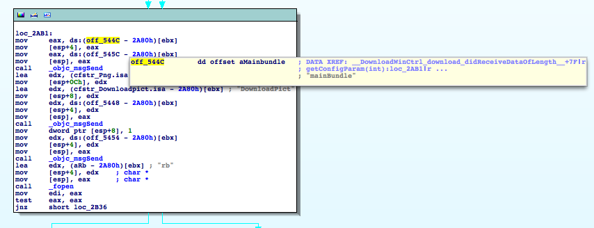
Hover your mouse pointer over the off_544C and as soon as the tool tip pops up scroll down with your scrolling wheel. You should see mainBundle appearing. (Depending on your screen size you might not have to scroll to see the information.)
If it doesn't work you can alternatively double click on off_544C to see what's located at that address. (Press ESC to come back.)
As we can see data from this offset is moved onto the stack as the 2nd parameter to the following _objc_msgSend call. So this must be our method name. But on which object is this invoked? Well, just do the same 2 lines below with off_545C. NSBundle is the object the method is invoked up upon. NSBundle is a class in obj-c - but as classes are objects too in that language it doesn't really matter. You could say it's the equivalent of calling a static class method in C++. Something like b = NSBundle::mainBundle(); .
After a lookup in the Cocoa docs it's clear that [NSBundle mainbundle] returns a reference to an DownloadPict.png file and fopen()s it for binary reading.
Let's skip to the next code block:
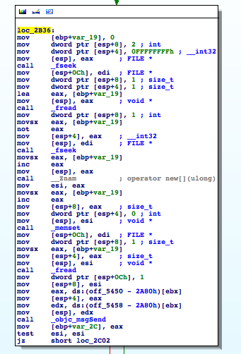
Ah, this is simple and nice; We can see a bunch of fseek(), fread() calls and some memory operations.
Wait ... Either the guy is parsing PNG by hand or this doesn't look like loading an image for displaying at all. Let's take a deeper look ...
A quick
man fseekreveals which parameters this function expects and what it does. It sets the read/write location pointer in an opened file to a given offset. The offset is relative to the beginning or the end of the file. Or relative to the current location. This is controlled by the function's 3rd parameter. In this case our 3rd parameter has the value
2. After a little shuffling through the appropriate C header files we find out that 2 equals to SEEK_END. So the seek operation is performed relative to the file's end.
The offset is passed as the 2nd parameter. We can see here that our offset is 0xffffffff which equals -1 as a signed 32bit integer. (fseek() takes signed int offsets.) The first parameter is the FILE pointer we got from fopen() in the previous code block.
So in plain english: We set the reading location to the second last byte in the file.
The following call to fread() reads that second last byte from the file into var_19.
After that there's this code:
movsx eax, [ebp+var_19] not eax mov [esp+4], eax
This operation is called One's Complement and what it does is: It takes the value of var_19 and inverts every bit of it. 0x00 becomes 0xff. 0x01 becomes 0xfe. 0x02 becomes 0xfd. Etc.
If you treat the data you perform this operation on as signed then it's the equivalent to negating a number and subtracting 1. (Or taking a negative number, adding 1 and changing the sign to positive.) So 0 becomes -1, 1 becomes -2, 2 becomes -3, etc.
The pseudo code equivalent would be:
eax = var_19 eax = -eax eax-- 2nd_arg_to_fseek = eax
If we look at the following fseek() call we'll find out that the 3rd parameter is SEEK_CUR this time. And as we are already at the end of the file there's not much place to go into the right direction. So we can conclude that eax will be most likely a negative integer after it has been inverted and the read pointer will be adjusted by eax bytes to the left.
[ If you wonder why we fseek (original var_19+1) bytes to the left: The previous fread() advanced our file location pointer by one to the right and we are at the last byte in the file now. So we have to fseek one byte more to the left to make up for that.]
After the fseek() call the original (not inverted) var_19 value is taken and var_19+1 bytes of dynamic memory are allocated by the call to __Znam (mangled C++ name for operator new[]). The location of that buffer is then saved in esi:
movsx eax, [ebp+var_19] inc eax mov [esp], eax call __Znam ; operator new[](ulong) mov esi, eax
The next few instructions fill the buffer with 0x00.
Then var_19 bytes are read from the file and stored in the recently allocated buffer:
mov [esp+0Ch], edi ; FILE * mov dword ptr [esp+8], 1 ; size_t movsx eax, [ebp+var_19] mov [esp+4], eax ; size_t mov [esp], esi ; void * call _fread
The following _objc_msgSend call creates a NSString instance from the bytes read from the file and stores a reference to this string in var_2C. Then the buffer is is deleted[]. The test for buffer existence is obsolete because you can safely run delete on NULL. See - we discovered some bad c++ practice here through disassembly: ;)
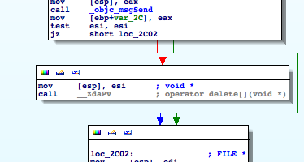
The file is closed and a new buffer is created from our NSString by invoking cStringFromString: on it. This buffer's address is stored in esi. Steve knows why the first buffer was deleted:
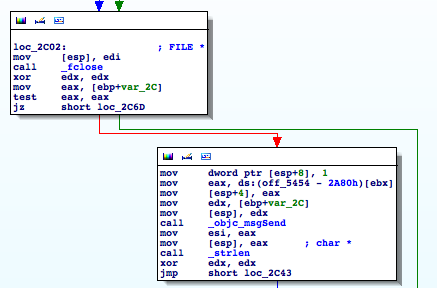
Then the buffer's length is determined and stored into eax by strlen(). Followed by a loop which iterates over the buffer:
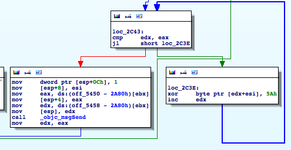
The location of our buffer is stored in esi. The length is in eax. We compare edx with eax and if edx is lower we xor the byte at buffer+edx with 0x5a and increase edx by one. Then we jump back to our edx/eax check.
If eax equals edx we break out of the loop and create a new NSString from the buffer by invoking stringWithCString:.
Then the resulting NSString is split into components by invoking componentsSeperatedByString: @";" on it. Component number arg_0 is returned as our hostname.
Wait? What? That's the grand scheme? Read a bunch of "encrypted" bytes from the end of an image file and xor them with 0x5a? Let's confirm that:
Grab a hex editor and open the DownloadPict.png file:
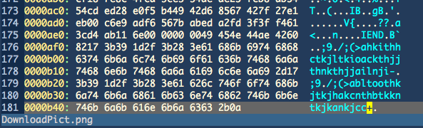
Looking at the 2nd last byte in the file we can read a value of 0x2b. Let's move 0x2b bytes to the left from that position and extract 0x2b bytes:
"\x17;9\x1d/;(>abltoothkjtkjhakcnthbtkkntkjkankjcc"
So let's "decrypt" those bytes without running the avRunner binary. I took here my favorite scripting language but you can take yours if you don't like my choice:
#include <string.h> #include <stdio.h> int main (int argc, const char **argv) { char *str = strdup("\x17;9\x1d/;(>abltoothkjtkjhakcnthbtkkntkjkankjcc"); char *p = str; while (*p) { *p++ ^= 0x5a; } printf("%s\n", str); return 0; }
Running this little piece of code gives us the following output:
MacGuard;86.55.210.102;194.28.114.101;41099
As we can see we get a human readable string which can be split into an array of components if divided by ";". arg_0 is either 1 or 2 and the elements at index 1 and 2 are both valid hostnames. Tadaa.
Let's fill in the components into our format string and we get this:
http://86.55.210.102/mac/soft.php?affid=41099 http://194.28.114.101/mac/soft.php?affid=41099The 2nd host seems to be rather slow. I guess it's a backup host in case the first one goes down. (Actually after further analysis it becomes clear that the 2nd host is used if the download from the first URL fails.)
If you open either of these URLs with your browser the MacDefender.app is downloaded. Don't run it!
So yes, that's all there is to know about this part of the malware. We could investigate further when the 2nd IP is chosen as a hostname, etc. Or we could take the main malware and dissect it. But that's up to you.
If you decide to play with the malware: Don't do it on a mission critical system. Preferably do it in a VM. But if something goes wrong: You can get rid off the MacDefender malware by killing it with kill -9 [Mac Defender PID].
As you can see malware analysis can be really easy (though most of the time it's more tricky than a simple one byte xor). This is a good opportunity to get into OS X malware analysis. I don't think it will get any more easy than this and the coming Mac malware will probably get more complex and better guarded against reversing attempts.
We used here only static analysis. If we would have fired up the debugger and had operated on the living object we could have saved us a lot of work/time. But we wouldn't have learned as much as by doing a static analysis.
If you have found a bug/error/mistake in my post or have a comment please contact me at leon.szpilewski@gmail.com or @fettemama.
I also take donations in the form of IDA Pro licenses ;)
(C) Leon Szpilewski 2011, Reproduction/Redistribution without prior written permission is not allowed! I do not take any responsibility for any data loss or damage that may occur by inappropriately following this article. Do not run the supplied avRunner.app!